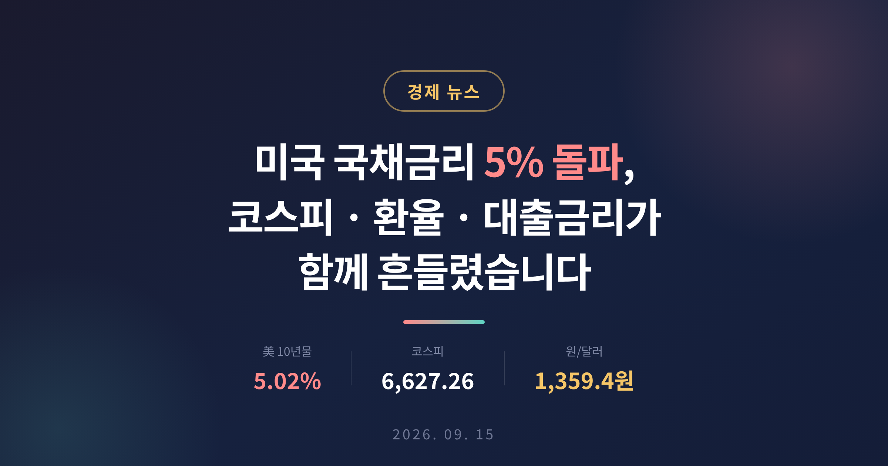
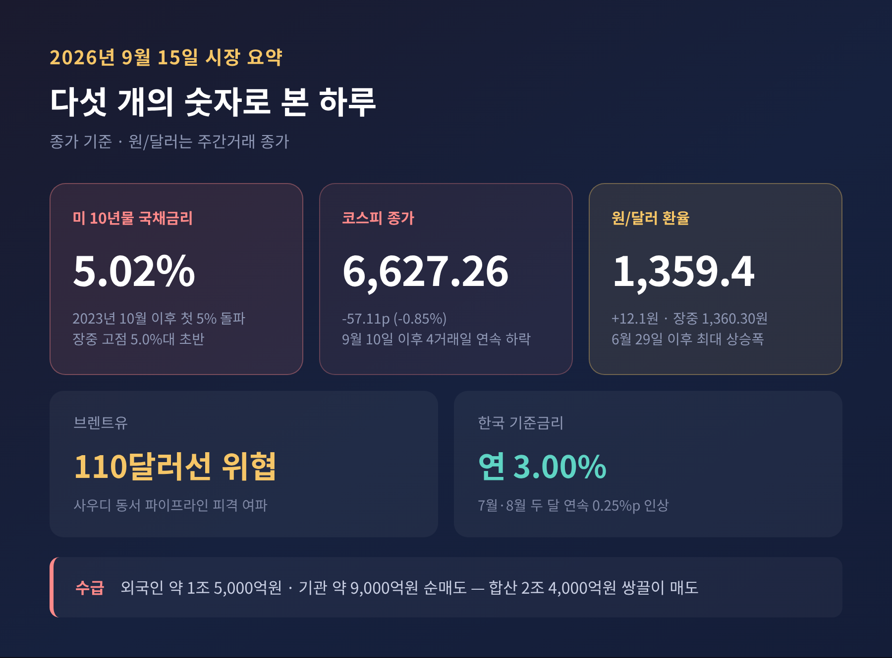
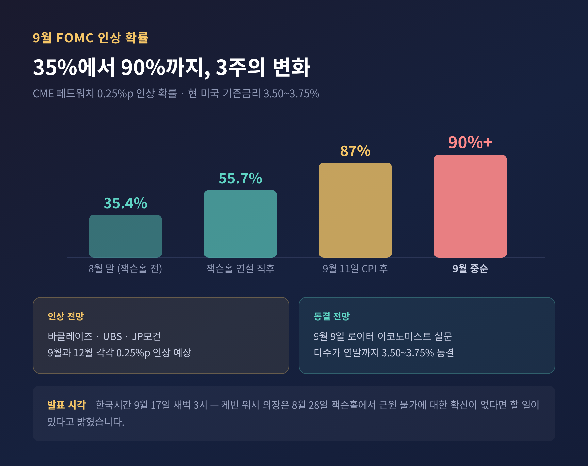
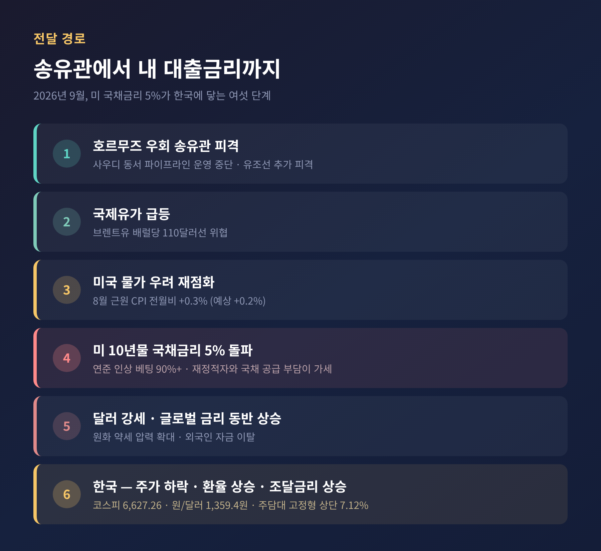
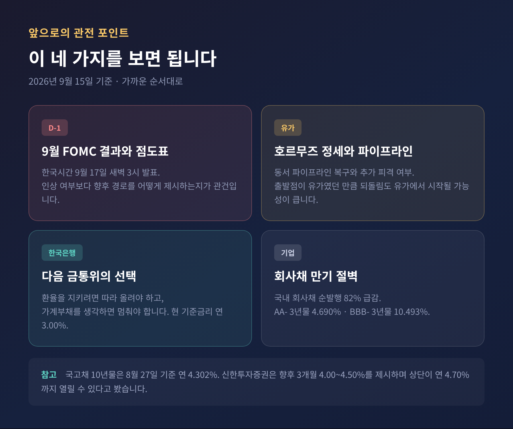
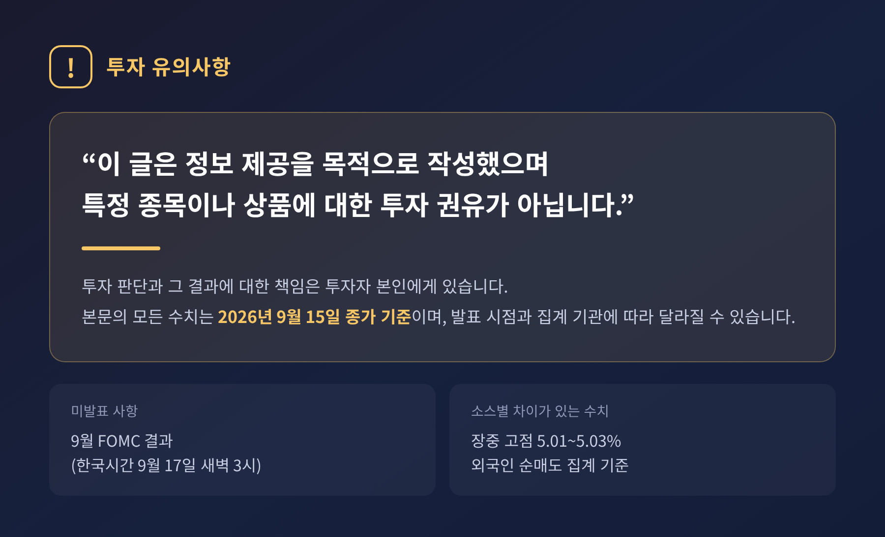

이번 글에서는 2026년 9월 15일 시장을 흔든 미국 국채금리 5% 돌파를 정리해 보겠습니다. 숫자 하나가 왜 서울의 주식·환율·대출금리까지 밀어 올렸는지, 그 연결 고리를 따라가 보려 합니다.
9월 15일 미국 10년 만기 국채금리가 연 5%를 넘어섰습니다.
한국시간 오후 3시 기준 연 5.02%였고, 장중 고점은 소스에 따라 5.01~5.03% 사이로 집계됐습니다. 2023년 10월 이후 처음이자, 글로벌 금융위기 직전인 2007년 이후로는 두 번째 5% 터치입니다. 여러 매체가 "19년 만의 최고치"라고 적은 이유입니다.
시장에서 5%는 오래전부터 '마의 5%', '심리적 저항선'으로 불려왔습니다. 안전자산인 미국 국채가 위험 없이 연 5%를 준다는 뜻이기 때문입니다. 월스트리트저널은 이번 돌파를 두고 고금리 시대가 다시 도래할 가능성을 거론했습니다.
같은 날 서울 시장도 함께 밀렸습니다. 코스피는 전 거래일보다 57.11포인트(0.85%) 내린 6,627.26에 마감했습니다. 9월 10일 이후 4거래일 연속 하락입니다. 외국인이 약 1조 5,000억 원, 기관이 약 9,000억 원을 팔아 합산 2조 4,000억 원 규모의 쌍끌이 매도가 나왔습니다. 개인이 사들였지만 낙폭을 되돌리기에는 부족했습니다.
원/달러 환율도 같은 방향으로 움직였습니다. 전 거래일보다 12.1원 오른 1,359.4원에 주간 거래를 마쳤고, 장중에는 1,360.30원을 찍었습니다. 하루 12원대 상승은 6월 29일 이후 약 3개월 만의 최대 폭입니다.

이번 금리 상승은 연준 혼자 만든 것이 아닙니다. 세 가지가 겹쳤습니다.
첫째는 유가입니다. 브렌트유가 배럴당 110달러선을 위협하는 수준까지 뛰었습니다. 방아쇠는 호르무즈 해협의 우회 송유관이었습니다. 사우디아라비아의 '동서 파이프라인'이 피격돼 운영이 중단되자, 해협이 막혔을 때 쓸 비상구마저 사라졌다는 계산이 시장에 퍼졌습니다. 호르무즈에서는 유조선 1척이 추가로 피격됐습니다.
둘째는 물가입니다. 9월 11일 발표된 미국 8월 소비자물가는 전년 대비 3.4%로 예상에 부합했습니다. 문제는 기조적 물가를 보여주는 근원 CPI였습니다. 전월 대비 0.3% 올라 시장 전망치 0.2%를 0.1%p 웃돌았습니다. 폭이 크지는 않습니다. 다만 방향이 문제였습니다.
셋째는 미국의 재정입니다. 대규모 재정적자와 그에 따른 국채 공급 부담이 장기금리를 계속 밀어 올리는 구조적 배경으로 지목됩니다.
정리하면 이런 순서입니다. 중동의 송유관이 끊겼고, 유가가 뛰었고, 미국 물가 기대가 흔들렸고, 장기금리가 5%를 넘었습니다. 한국경제TV의 한 분석은 이를 "전쟁이 유가·물가·금리를 움직인다"는 한 줄로 요약했습니다.
이번 주의 진짜 이벤트는 따로 있습니다. 미 현지시간 9월 15~16일 열리는 연방공개시장위원회입니다. 결과는 한국시간 9월 17일 새벽 3시에 나옵니다.
현재 미국 기준금리는 연 3.50~3.75%입니다. 시장의 인상 베팅은 짧은 기간에 가팔라졌습니다. 시카고상품거래소 페드워치 기준으로 8월 말 35%대였던 0.25%p 인상 확률은 잭슨홀 연설 직후 55%대로, 8월 CPI 발표 뒤 87%로, 9월 중순에는 90% 이상까지 올라왔습니다.
중심에는 케빈 워시 연준 의장이 있습니다. 2026년 5월 취임 이후 두 차례 연속 금리를 동결했던 인물입니다. 그는 8월 28일 잭슨홀 연설에서 근원 물가가 목표인 2%를 향해 "명확하고 충분한 속도"로 움직인다는 확신이 필요하다고 말했습니다. 그렇지 않다면 할 일이 있다는 말도 덧붙였습니다. 바클레이즈는 이 연설을 상당히 매파적이라고 평가하며 9월과 12월 각각 0.25%p 인상으로 전망을 바꿨습니다. UBS와 JP모건도 두 차례 인상을 봅니다.
다만 모두가 같은 곳을 보는 것은 아닙니다. 9월 9일 로이터가 실시한 이코노미스트 설문에서는 다수가 연말까지 3.50~3.75% 동결을 예상했습니다. 선물시장의 가격과 전문가 서베이가 갈려 있는 셈입니다.
정치 변수도 얽혀 있습니다. 트럼프 대통령은 줄곧 금리 인하를 압박해 왔습니다. 워시 의장이 인상을 택하면 연준 독립성 논쟁으로 번질 소지가 있습니다.

미국 금리가 한국 가계의 통장까지 오는 데는 몇 단계가 필요합니다. 그 단계가 지금 빠르게 좁혀지고 있습니다.
한국은행은 이미 두 달 연속 금리를 올렸습니다. 7월 16일 연 2.50%에서 2.75%로, 8월 27일 다시 3.00%로 인상했습니다. 경기 회복과 물가 압력, 수도권 집값과 가계대출 증가를 함께 고려한 결정이었습니다. 한국은행은 물가가 상당 기간 목표 수준을 웃돌 것으로 본다고 밝혔습니다.
9월 기준 5대 은행 주택담보대출 금리는 5년 고정형이 연 4.68~7.12%, 변동형이 연 4.22~6.46%입니다. 신용대출은 연 4.78~5.98%입니다. 고정형 상단은 이미 7%를 넘었고, '연 8% 시대'라는 표현이 언론에 오르내립니다.
체감으로 바꾸면 이렇습니다. 4억 5,000만 원을 빌린 차주의 월 원리금이 302만 원에서 330만 원 수준으로 늘어난다는 계산이 나옵니다. 매달 25만~28만 원이 더 빠져나가는 셈입니다. 타격은 고르지 않습니다. 변동금리 비중이 높고 소득 대비 상환 부담이 큰 차주에게 먼저, 더 깊게 닿습니다.
여기에 금융당국의 가계대출 총량 관리가 겹쳤습니다. 은행 간 금리 경쟁이 줄면서 차주는 '대출 절벽'과 '고금리'를 동시에 마주하게 됐습니다.
수치가 꽤 날카롭습니다. 국내 3년 만기 AA- 등급 회사채 금리는 4.690%로 연초 대비 123.1bp 올랐습니다. BBB- 등급은 10.493%로 119.0bp 상승했습니다. 국내 회사채 순발행은 82% 급감해 만기 절벽 우려가 나옵니다.
구조가 뒤집힌 대목이 핵심입니다. 미국 정부가 빌리는 금리가 국내 우량 기업이 빌리는 금리보다 높아졌습니다. 투자자 입장에서 굳이 위험을 감수할 이유가 줄어듭니다. 그 결과 대기업은 상대적으로 싼 은행 대출로 옮겨가고, 자본시장 문이 좁은 중소기업은 은행 문턱까지 높아진 상황에 놓였습니다.
미국 금리가 오르면 달러로 돈이 몰립니다. 원화는 약해집니다. 9월 15일의 12.1원 상승은 그 교과서적 경로가 그대로 나타난 결과입니다. 여기에 외국인의 국내 주식 매도와 AI 투자 속도조절론까지 더해졌습니다.
환율이 오르면 수입 물가가 오릅니다. 유가가 이미 높은 상황에서 환율까지 오르면 국내 물가 압력은 두 번 가중됩니다. 그러면 한국은행이 금리를 내리기가 더 어려워집니다. 고리가 서로를 물고 있는 형태입니다.

2023년 10월에도 미 국채금리는 5%를 찍었습니다. 그때와 지금은 결이 다릅니다.
예전에는 물가를 잡기 위한 긴축의 끝자락에서 금리가 올랐습니다. 지금은 인하 사이클이 멈춘 자리에서 다시 인상 이야기가 나오는 국면입니다. 한국의 사정도 달라졌습니다. 그때 한국은행은 동결과 인하를 저울질하고 있었지만, 지금은 두 달 연속 인상을 마친 뒤 3%에 올라섰습니다. 방향이 같아졌다는 점이 위안이 되기도 하고, 부담이 되기도 합니다.
뉴데일리를 비롯한 매체들은 지금 상황을 금리·물가·환율의 '3고(高)'로 부릅니다. 세 가지가 한꺼번에 오르는 국면은 자주 오지 않습니다.
가장 가까운 분기점은 9월 17일 새벽입니다. 인상 여부 자체보다, 점도표와 기자회견의 톤이 더 많은 것을 말해 줄 것입니다. 인상하되 향후 경로를 완만하게 제시한다면 시장은 안도할 여지가 있습니다.
두 번째는 호르무즈입니다. 동서 파이프라인이 복구되고 추가 피격이 멎으면 유가가 먼저 진정됩니다. 이번 사이클의 출발점이 유가였던 만큼, 되돌림도 유가에서 시작될 가능성이 큽니다.
세 번째는 한국은행의 다음 선택입니다. 미국이 올리면 한미 금리차가 다시 벌어집니다. 환율을 지키려면 따라 올려야 하고, 가계부채를 생각하면 멈춰야 합니다. 쉬운 답이 없는 자리입니다. 자본시장연구원은 한은이 인상에 나서더라도 시장이 상당 부분 선반영해 내외금리차 축소의 영향은 제한적일 것으로 봤습니다.
네 번째는 회사채 만기 구조입니다. 순발행 82% 감소가 4분기 이후 차환 부담으로 옮겨붙을지 지켜볼 필요가 있습니다.
채권시장 쪽 전망도 참고할 만합니다. 8월 27일 기준 국고채 10년물 금리는 연 4.302%였습니다. 신한투자증권은 향후 3개월 4.00~4.50%를 제시하면서, 경기 회복과 재정 확대, 세계 장기금리 상승을 감안하면 상단이 연 4.70%까지 열릴 수 있다고 봤습니다.

솔직히 말해 이 글이 다루지 못하는 영역이 있습니다. FOMC 결과는 아직 나오지 않았습니다. 호르무즈 송유관의 복구 시점도 확인되지 않았습니다. 수치 역시 소스마다 조금씩 다릅니다. 장중 고점이 5.01%인지 5.03%인지, 코스피 연속 하락이 사흘인지 나흘인지, 외국인 순매도가 1조 5,000억 원인지 3조 원인지는 집계 기준과 시점에 따라 갈립니다. 이 글에서는 9월 15일 종가 기준을 중심으로 정리했습니다.

정리하면 이렇습니다.
미국의 장기금리 5%는 먼 나라 뉴스처럼 보이지만, 실제로는 서울의 주가와 환율, 그리고 매달 빠져나가는 원리금까지 닿습니다. 호르무즈의 송유관 하나가 끊긴 일이 몇 단계를 거쳐 가계의 통장에 도착하는 데 일주일이 채 걸리지 않았습니다.
"세계는 금리로 연결되어 있습니다."
이번 국면이 얼마나 갈지 지금 단정하기는 어렵습니다. 다만 한 가지는 분명해 보입니다. 당분간은 유가와 미 국채금리, 이 두 숫자를 매일 확인하는 습관이 필요할 것 같습니다.